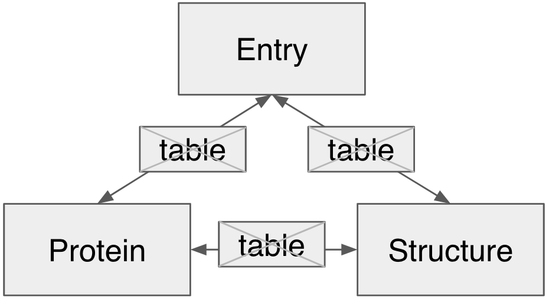
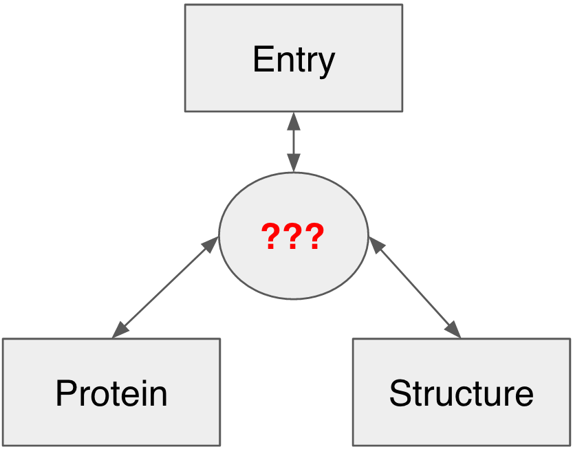
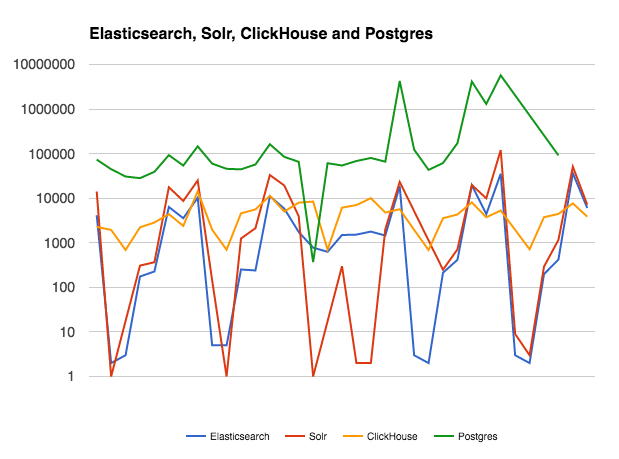
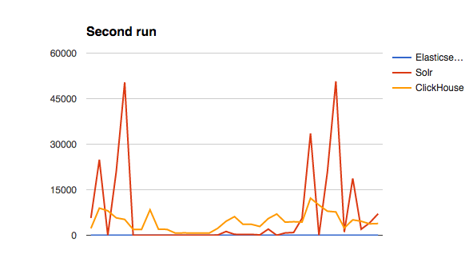

Elasticsearch in InterPro
https://www.ebi.ac.uk/interpro/
Data organization
First attempt: MySQL
 Pros- Reliable
- Ease of cross-table
- Returns exact counts
- Can select subsets of results
- Lots of experience in team
- High support in Django - DRF
- EBI supported
Cons
- SLOW for Protein related queries
- Scalability
Data organization
Second attempt: Hybrid (MySQL + No-normalized DB)
 Pros- Number of JOINS reduced.
- Django models are conserved
- Speed at querying
- Sharding
- Replicates
Cons
- No SQL
- Low support in Django
- Either slow or unreliable for writing operations
- Some of these technologies are too new
Choosing the technology [2017]
| Type | Search | Search | Column DB | Column DB (plugin) |
| Interface | HTTP | HTTP | HTTP | ODBC, JDBC |
| Query Language | Lucene (extended) | Lucene (extended) | SQL (subset) | SQL |
| Aggregations | Facets | Aggregations | SQL | SQL |
| JSON support | Yes | Yes | Yes | N/A |
| Type of server | Java | Java | Native | Native |
Data set [2017]
Number of documents: 340,480,753
| InterPro | 29,965 |
| Panther | 86,618 |
| ProDom | 1,844 |
| Smart | 1,312 |
| Pfam | 16,282 |
| TIGRFAMs | 4,488 |
| CDD | 11,005 |
| HAMAP | 2,087 |
| Merops | 1,115 |
| Swiss-Prot | 536,539 |
| TrEMBL | 60,095,598 |
| PDB | 115,743 |
Queries
Filter:
- All documents
- Swissprot proteins
- Trembl proteins
- Specific accession
- With a structure
- Specific structure
- Unintegrated entries
Actions:
- group by entry_db and count
- group by entry_db and count unique
- group by protein_db and count unique
- get unique entries
- get unique entries (plus filter)
Overall Results
| Number of tests | 35 | 35 | 35 | 30 | Total Execution Time (min) | 6.03 | 2.89 | 2.68 | 287.60 |
Comparison - First run
Comparison - Second run
Elasticsearch
- Second Fastest First run
- Best in second run
- Big community
- Some EBI projects already use it.
- Easy development after having an API prototype working with Solr
Elasticsearch in a nutshell
Elasticsearch is a distributed search engine. An Elasticsearch cluster is composed of one or more nodes.
Indices and documents in place of tables and rows. In Elasticsearch, information is stored as JSON documents within indices.
An index is broken into shards. Shards are distributed across the cluster. Horizontal scalling for the win!
Shards are replicated on different nodes. If a node goes down, the whole index is still available as replicas of the shards were made on other nodes.
InterPro: Elasticsearch cluster

Three nodes (VMs) per cluster:
- CPUs: 8
- Mem: 32 GB
- Storage: 2 TB (SSD-like)
-
System config
- Swap disabled
- 65k open file descriptions
- 250k+ mapped memory areas (virtual memory)
InterPro: Indices, shards, replicas
Preparing documents
One LSF job writes files to the EBI filesystem. Each file contains 100k documents. 1.6b documents; 16k files; 115GB; 30 hoursIndexing documents
Two other LSF jobs index (send) documents to Elastic clusters in two passes:- First pass: read files as they are being generated and attempt to index documents. Failed documents are saved in new files.
- Second pass: read files containing failed documents, and try again. When all documents in one file have been indexed, the file is deleted. When all files have been deleted, all documents have been indexed.
Making data live
without downtime
InterPro 80.0 is live. We're about to release InterPro 81.0
Let's assume we have four indices: cdd80, pfam80, cdd81, and pfam81.
Elasticsearch supports index aliases
An alias is a soft link to one or more indexes, e.g. live points to cdd80 and pfam80, and next points to cdd81 and pfam81
Swap aliases in one, atomic operation
We remove the live alias from cdd80 and pfam80, and add it to cdd81 and pfam81.
InterPro7
https://www.ebi.ac.uk/interpro/
- Group by + counts
- Unique accessions after filtering
- IDA search
What help we would like to have.
Optimization
- Is our mapping and type selection the best choice?
- Is our sharding/replicate strategy the best we can do?
- How can we improve performance of our queries?
- How can we improve performance of our release procedures?
- Can we have more machines?